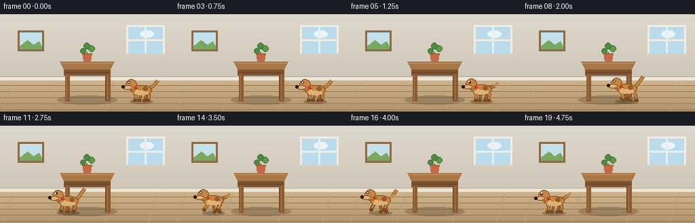
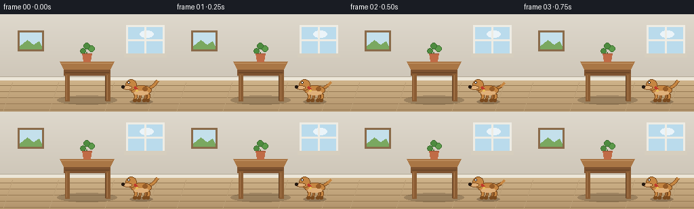

CODING AGENTS AS PIXEL WORLD MODELS
traex/Seed-2.1-Pro-0915 · dynamic_spatial_relationship_0002
点击播放 · 原生 RGB 像素
逐轮保存的候选
回放视频、检查图与代码变化。
每份候选均可单独播放。实际图片检查记录在下方工具轨迹中。
候选 01播放与检查图
点击播放 · 原生 RGB 像素


展开代码变化
--- 上一保存版本
+++ 本次保存版本
@@ -0,0 +1,202 @@
+"""Procedural text-to-video generator.
+
+Scene: a dog waits on the right of a table, then runs to the left of it.
+Pure numpy/PIL rendering, no external assets or models.
+"""
+from pathlib import Path
+
+import numpy as np
+from PIL import Image, ImageDraw
+
+import artifact_io
+
+W, H = 256, 144
+N_FRAMES, FPS = 20, 4.0
+
+# Palette
+WALL_TOP = np.array([222, 216, 204])
+WALL_BOT = np.array([206, 198, 184])
+FLOOR_TOP = np.array([207, 179, 138])
+FLOOR_BOT = np.array([178, 148, 108])
+PLANK_LINE = (150, 121, 84)
+BASEBOARD = (236, 230, 216)
+
+DOG_TAN = (198, 134, 66)
+DOG_LIGHT = (224, 176, 121)
+DOG_DARK = (122, 74, 30)
+DOG_FAR = (166, 108, 54)
+DOG_SPOT = (150, 92, 40)
+COLLAR = (192, 57, 43)
+TAG = (230, 190, 90)
+BLACK = (38, 26, 18)
+
+WOOD_TOP = (169, 118, 69)
+WOOD_EDGE = (125, 82, 48)
+WOOD_LEG = (138, 92, 51)
+WOD_DARK = (96, 63, 35)
+
+HORIZON = 97
+
+
+def lerp(a, b, t):
+ return a + (b - a) * t
+
+
+def build_background():
+ """Static room, wall decor, table and plant (dog is composited later)."""
+ img = np.zeros((H, W, 3), dtype=np.float32)
+ for y in range(H):
+ if y < HORIZON:
+ t = y / HORIZON
+ img[y, :] = lerp(WALL_TOP, WALL_BOT, t)
+ else:
+ t = (y - HORIZON) / (H - HORIZON)
+ img[y, :] = lerp(FLOOR_TOP, FLOOR_BOT, t)
+ bg = Image.fromarray(img.astype(np.uint8), "RGB").convert("RGBA")
+ d = ImageDraw.Draw(bg)
+
+ # Floor planks
+ for y in range(HORIZON + 8, H, 9):
+ d.line([(0, y), (W, y)], fill=PLANK_LINE, width=1)
+ for x0 in (18, 86, 168, 232):
+ d.line([(x0, HORIZON + 4), (x0 - 14, H)], fill=(186, 158, 118), width=1)
+
+ # Baseboard
+ d.rectangle([0, HORIZON - 5, W, HORIZON], fill=BASEBOARD)
+ d.line([(0, HORIZON - 5), (W, HORIZON - 5)], fill=(178, 168, 150), width=1)
+
+ # Window on the right of the wall
+ d.rectangle([186, 16, 242, 60], fill=(238, 236, 228))
+ d.rectangle([189, 19, 239, 57], fill=(186, 219, 236))
+ d.ellipse([206, 24, 226, 34], fill=(235, 244, 249))
+ d.line([(214, 19), (214, 57)], fill=(238, 236, 228), width=3)
+ d.line([(189, 38), (239, 38)], fill=(238, 236, 228), width=3)
+ d.rectangle([183, 58, 245, 63], fill=(214, 206, 190))
+
+ # Framed picture on the left of the wall
+ d.rectangle([26, 24, 64, 54], fill=(138, 107, 74))
+ d.rectangle([29, 27, 61, 51], fill=(196, 224, 235))
+ d.polygon([(29, 47), (40, 38), (49, 45), (57, 40), (61, 47), (61, 51), (29, 51)],
+ fill=(122, 168, 96))
+
+ # Soft table shadow on the floor
+ sh = Image.new("RGBA", (W, H), (0, 0, 0, 0))
+ sd = ImageDraw.Draw(sh)
+ sd.ellipse([84, 120, 172, 133], fill=(50, 36, 22, 60))
+ bg = Image.alpha_composite(bg, sh)
+ d = ImageDraw.Draw(bg)
+
+ # Table: back legs, top, front legs
+ d.rectangle([96, 80, 101, 127], fill=WOD_DARK)
+ d.rectangle([155, 80, 160, 127], fill=WOD_DARK)
+ d.polygon([(88, 70), (168, 70), (162, 82), (94, 82)], fill=WOOD_TOP)
+ d.line([(90, 72), (165, 72)], fill=(196, 150, 102), width=1)
+ d.polygon([(94, 82), (162, 82), (162, 90), (94, 90)], fill=WOOD_EDGE)
+ d.line([(96, 86), (160, 86)], fill=WOD_DARK, width=1)
+ d.rectangle([96, 88, 102, 128], fill=WOOD_LEG)
+ d.rectangle([156, 88, 162, 128], fill=WOOD_LEG)
+ d.line([(98, 90), (98, 126)], fill=(168, 120, 76), width=1)
+ d.line([(158, 90), (158, 126)], fill=(168, 120, 76), width=1)
+
+ # Small potted plant on the table
+ px = 128
+ d.line([(px, 70), (px, 56)], fill=(78, 120, 58), width=2)
+ d.ellipse([px - 10, 50, px - 2, 58], fill=(78, 139, 63), outline=(60, 110, 48))
+ d.ellipse([px + 2, 46, px + 11, 55], fill=(92, 154, 74), outline=(60, 110, 48))
+ d.ellipse([px - 5, 42, px + 4, 51], fill=(78, 139, 63), outline=(60, 110, 48))
+ d.polygon([(px - 7, 58), (px + 7, 58), (px + 5, 70), (px - 5, 70)], fill=(192, 107, 70))
+ d.line([(px - 7, 58), (px + 7, 58)], fill=(156, 80, 52), width=1)
+
+ return bg
+
+
+def thick_line(d, pts, fill, width, outline=None):
+ if outline is not None:
+ d.line(pts, fill=outline, width=width + 2, joint="curve")
+ d.line(pts, fill=fill, width=width, joint="curve")
+
+
+def draw_dog(img, cx, base, phase, running, clock):
+ """Draw a left-facing dog. cx is body center x, base is the foot line."""
+ d = ImageDraw.Draw(img)
+ bob = -1.6 * abs(np.sin(phase)) if running else 0.4 * np.sin(clock * 0.55)
+ by = base - 15 + bob # body center y
+ hx, hy = cx - 15, by - 8 # head center
+
+ # Tail (behind body)
+ wag = (np.sin(phase * 1.3) * 3.0) if running else np.sin(clock * 0.7) * 2.0
+ thick_line(d, [(cx + 13, by - 3), (cx + 19, by - 8 + wag),
+ (cx + 24, by - 14 + wag * 1.4)], DOG_TAN, 3, DOG_DARK)
+
+ # Legs: far pair first (darker), then near pair
+ legs = [("far", cx - 3, np.pi), ("far", cx + 5, np.pi),
+ ("near", cx - 9, 0.0), ("near", cx + 10, 0.0)]
+ for kind, hipx, off in legs:
+ hipy = by + 5
+ if running:
+ swing = 4.6 * np.sin(phase + off)
+ lift = max(0.0, -np.sin(phase + off)) * 3.0
+ else:
+ swing, lift = 0.0, 0.0
+ footx, footy = hipx + swing, base - lift
+ kneex, kneey = hipx + swing * 0.35 + 1.5, (hipy + footy) / 2 - 2
+ col = DOG_FAR if kind == "far" else DOG_TAN
+ thick_line(d, [(hipx, hipy), (kneex, kneey), (footx, footy)],
+ col, 3 if kind == "near" else 2, DOG_DARK)
+ d.ellipse([footx - 2.5, footy - 1.5, footx + 2.5, footy + 2.5], fill=DOG_DARK)
+
+ # Body
+ d.ellipse([cx - 15, by - 7, cx + 15, by + 7], fill=DOG_TAN, outline=DOG_DARK, width=1)
+ d.ellipse([cx - 11, by + 1, cx + 11, by + 7], fill=DOG_LIGHT)
+ d.ellipse([cx + 2, by - 5, cx + 9, by + 1], fill=DOG_SPOT)
+
+ # Floppy ear (slight flap while running)
+ flap = 1.6 * np.sin(phase) if running else 0.0
+ d.polygon([(hx - 4, hy - 7), (hx + 6, hy - 6),
+ (hx + 4 + flap, hy + 4), (hx - 2, hy + 2)], fill=DOG_DARK)
+
+ # Head and snout
+ d.ellipse([hx - 8, hy - 8, hx + 8, hy + 8], fill=DOG_TAN, outline=DOG_DARK, width=1)
+ d.ellipse([hx - 12, hy + 1, hx + 1, hy + 7], fill=DOG_LIGHT, outline=DOG_DARK, width=1)
+ d.ellipse([hx - 14, hy + 1.5, hx - 10, hy + 5.5], fill=BLACK)
+ d.ellipse([hx - 4.5, hy - 4.5, hx - 1.5, hy - 1.5], fill=BLACK)
+ d.ellipse([hx - 4.0, hy - 4.0, hx - 3.0, hy - 3.0], fill=(255, 255, 255))
+
+ # Collar with tag
+ thick_line(d, [(hx + 5, by - 5), (hx + 9, by - 1)], COLLAR, 3)
+ d.ellipse([hx + 7.5, by - 1, hx + 10.5, by + 2], fill=TAG)
+
+
+def main():
+ case_dir = Path(__file__).resolve().parent
+ bg = build_background()
+ x_right, x_left, base = 208, 48, 127
+ frames = []
+
+ for f in range(N_FRAMES):
+ if f <= 2:
+ cx, running, clock = x_right, False, f
+ elif f >= 17:
+ cx, running, clock = x_left, False, f
+ else:
+ p = (f - 3) / (16 - 3)
+ p = p * p * (3 - 2 * p) # smoothstep ease in/out
+ cx = lerp(x_right, x_left, p)
+ running, clock = True, f
+ phase = (x_right - cx) * 0.62 # gait phase tied to distance travelled
+
+ img = bg.copy()
+ shadow = Image.new("RGBA", (W, H), (0, 0, 0, 0))
+ ImageDraw.Draw(shadow).ellipse(
+ [cx - 17, base - 1, cx + 17, base + 5], fill=(45, 32, 20, 75))
+ img = Image.alpha_composite(img, shadow)
+ draw_dog(img, cx, base, phase, running, clock)
+ frames.append(np.asarray(img.convert("RGB"), dtype=np.uint8))
+
+ frames = np.stack(frames, axis=0)
+ artifact_io.save(frames, case_dir)
+ print(f"Saved {frames.shape} frames to {case_dir}")
+
+
+if __name__ == "__main__":
+ main()
可观测工具轨迹
实际执行的命令与返回图片。
命令 1exit 0
/bin/bash -lc 'ls -la && cat prompt.txt && echo "=====" && cat GENERATION_RULES.md && echo "=====" && cat task_spec.json'
命令 2exit 0
/bin/bash -lc 'cat artifact_io.py && echo "=====" && cat player_template.html'
命令 3exit 0
/bin/bash -lc 'cd . && python generate.py && ls -la'
命令 4exit 0
/bin/bash -lc "cd . && python - <<'EOF'
import numpy as np
from PIL import Image
tan = np.array([198,134,66])
for f in range(20):
a = np.asarray(Image.open(f\"frames/{f:02d}.png\").convert(\"RGB\"))
mask = (np.abs(a.astype(int)-tan).sum(axis=2) < 60)
ys, xs = np.nonzero(mask)
cx = xs.mean() if len(xs) else -1
side = \"RIGHT\" if cx > 128 else (\"LEFT \" if cx>=0 else \" ? \")
print(f\"frame {f:02d}: dog_cx={cx:6.1f} xrange=({xs.min():3d},{xs.max():3d}) yrange=({ys.min():3d},{ys.max():3d}) {side} n={mask.sum()}\")
EOF"命令 5exit 0
/bin/bash -lc "cd . && python - <<'EOF'
import numpy as np
from PIL import Image
TABLE_CX = 128
for f in range(20):
a = np.asarray(Image.open(f\"frames/{f:02d}.png\").convert(\"RGB\")).astype(int)
r,g,b = a[...,0], a[...,1], a[...,2]
mask = (r >= 180) & (g >= 120) & (g <= 195) & (b < 140) # dog tan/light only
ys, xs = np.nonzero(mask)
cx = xs.mean()
side = \"RIGHT of table\" if cx > TABLE_CX + 20 else (\"LEFT of table\" if cx < TABLE_CX - 20 else \"near table\")
print(f\"frame {f:02d}: dog_cx={cx:6.1f} xrange=({xs.min():3d},{xs.max():3d}) n={mask.sum():4d} {side}\")
EOF"保存候选 1 份；完成命令 5 次；可验证图片返回 0 张。原始 API 响应与完整日志保留在本地。